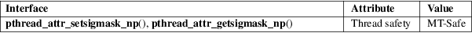

pthread_attr_setsigmask_np, pthread_attr_getsigmask_np − set/get signal mask attribute in thread attributes object
POSIX threads library (libpthread, −lpthread)
#define
_GNU_SOURCE /* See feature_test_macros(7) */
#include <pthread.h>
int
pthread_attr_setsigmask_np(pthread_attr_t
*attr,
const sigset_t *sigmask);
int pthread_attr_getsigmask_np(const pthread_attr_t
*attr,
sigset_t *sigmask);
The pthread_attr_setsigmask_np() function sets the signal mask attribute of the thread attributes object referred to by attr to the value specified in *sigmask. If sigmask is specified as NULL, then any existing signal mask attribute in attr is unset.
The pthread_attr_getsigmask_np() function returns the signal mask attribute of the thread attributes object referred to by attr in the buffer pointed to by sigmask. If the signal mask attribute is currently unset, then this function returns the special value PTHREAD_ATTR_NO_SIGMASK_NP as its result.
The pthread_attr_setsigmask_np() function returns 0 on success, or a nonzero error number on failure.
the pthread_attr_getsigmask_np() function returns either 0 or PTHREAD_ATTR_NO_SIGMASK_NP. When 0 is returned, the signal mask attribute is returned via sigmask. A return value of PTHREAD_ATTR_NO_SIGMASK_NP indicates that the signal mask attribute is not set in attr.
On error, these functions return a positive error number.
|
ENOMEM |
(pthread_attr_setsigmask_np()) Could not allocate memory. |
For an explanation of the terms used in this section, see attributes(7).

GNU; hence the suffix "_np" (nonportable) in the names.
glibc 2.32.
The signal mask attribute determines the signal mask that will be assigned to a thread created using the thread attributes object attr. If this attribute is not set, then a thread created using attr will inherit a copy of the creating thread’s signal mask.
For more details on signal masks, see sigprocmask(2). For a description of a set of macros that can be used to manipulate and inspect signal sets, see sigsetops(3).
In the absence of pthread_attr_setsigmask_np() it is possible to create a thread with a desired signal mask as follows:
|
• |
The creating thread uses pthread_sigmask(3) to save its current signal mask and set its mask to block all signals. | ||
|
• |
The new thread is then created using pthread_create(); the new thread will inherit the creating thread’s signal mask. | ||
|
• |
The new thread sets its signal mask to the desired value using pthread_sigmask(3). | ||
|
• |
The creating thread restores its signal mask to the original value. |
Following the above steps, there is no possibility for the new thread to receive a signal before it has adjusted its signal mask to the desired value.
sigprocmask(2), pthread_attr_init(3), pthread_sigmask(3), pthreads(7), signal(7)